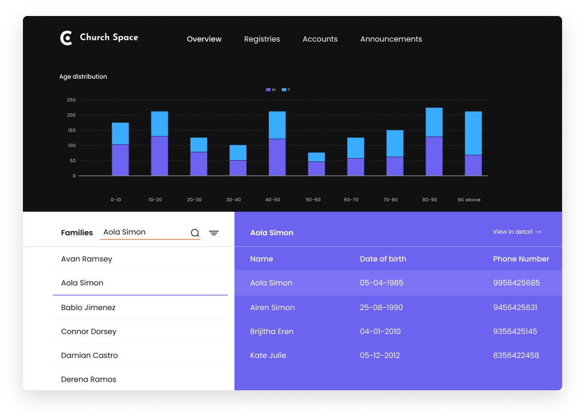
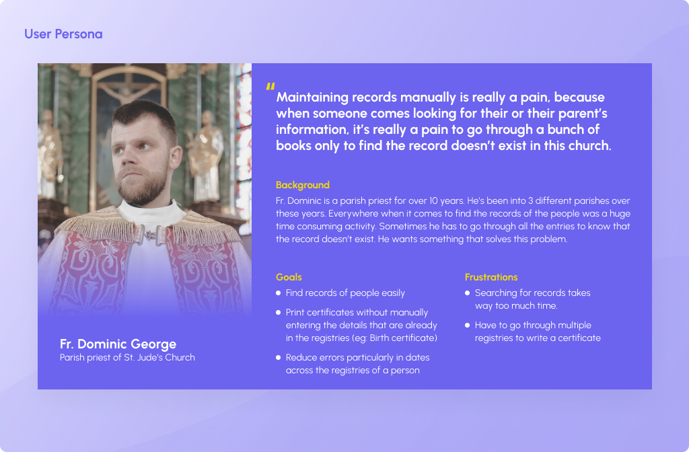
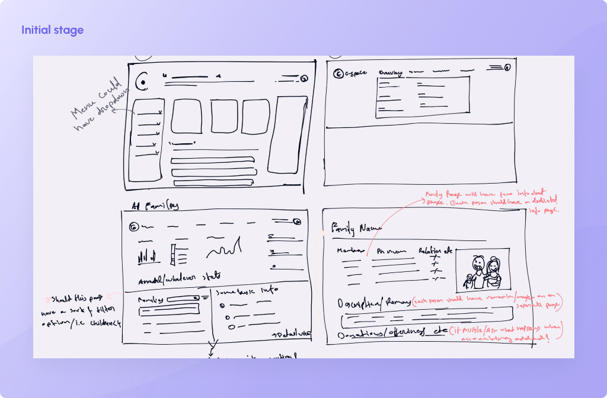
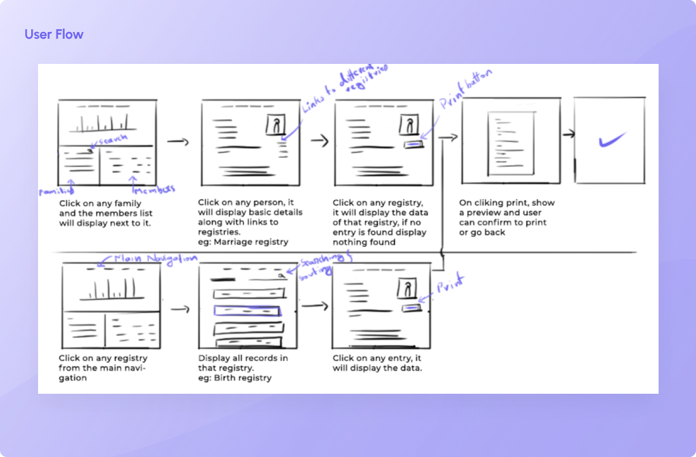
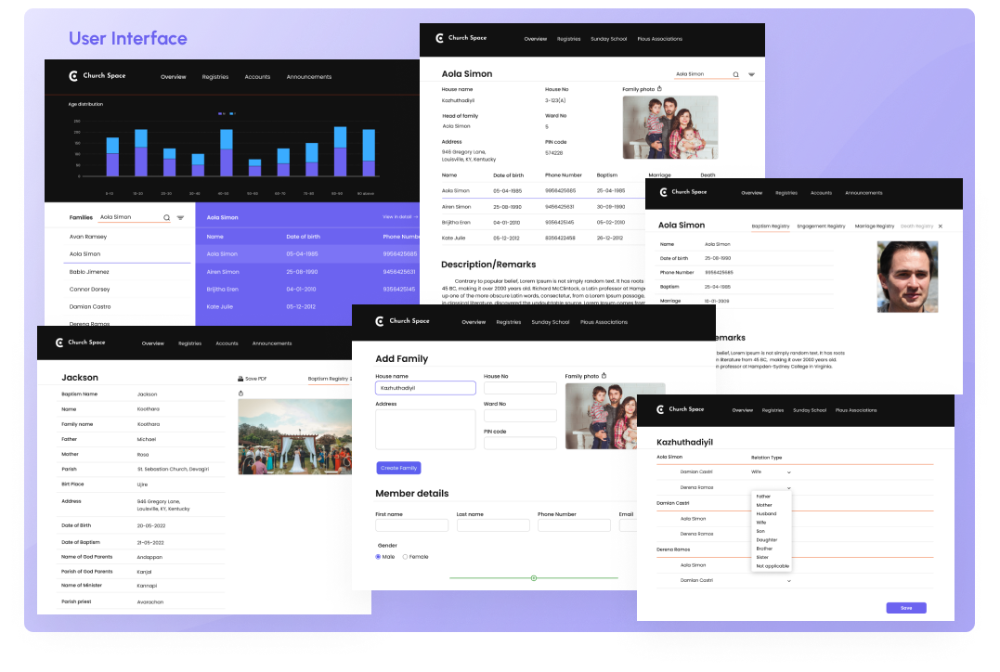

C-SPACE
C-Space is my college project where me and my teammates develop a software for christian church to manage their records. I was responsible for UI/UX and backend.


C-Space is my college project where me and my teammates develop a software for christian church to manage their records. I was responsible for UI/UX and backend.
C-Space came from explorations of simplifying the process of maintaining registries of hundreds of people in every christian church. The goal was to simplify the process of maintaining records and registries. This was my college project but currently in talks with the diocesean leaders about implementing it in the Belthangady diocese.
Churches in Belthangady diocese were using the old manual way of keeping the registries. This introduced a lot of problems like searching for a specific record, writing certificates like marriage certificates etc, and mismatched data across registries.
I started the project off by speaking to the end users - parish priests. I wanted to get their perspectives, and understand all their pain points and needs. Through my research, I realized that searching for records and writing certificates were the main problems for them. Writing certificates includes looking through different registries and picking up information from all the different registries.
Next, I conducted competitor research on other similar apps. This allowed me to understand what works and what didn't, as well as understand why certain apps were more popular. When analyzing these softwares I found that softwares in this niche does not have a simple and easy to use UI.
After interviewing the parish priests and understanding their pain points, I came up with this persona that summarizes the main problems they were facing.
Below is a small part of a barinstorming that I did based on the research and information. This helped me to understand all the featues and overall direction that I should take.
Based on my research I came up with a basic user flow for searching for records and printing certificates. This is the only flow I created but later on we decided to add few more features but I did not create any user flow. We directly went for it because of the limited time we had to finish this project.
I know user flows are usually not like this and this looks more like a low fidelity wireframe but, again because of the time limitation I just went for it and I kind of prefer this method to be honest because it's a little bit more visual. But I do understand that creating a low fidelity wireframe even before creating a user flow may not be a suitable option for larger projects.
Other than the above user flow or low fidelity wireframe whatever, I did not create any high fidelity wireframe. Since I was the only one in the “designing team” I did not had to create any of that, I had a pretty good understanding of what to do, so I directly jumped into designing the UI. Also the submission date was preponed, great! So obviously we were running out of time.
These are the final designs that I did on Figma, but as we progressed through the project we added and removed few features here and there. But still most of the design is pretty much similar to this. I would say around 95% is same type of design. Here are few of the features that we decided to add but did not really had the time to do the designs in Figma. Instead of that I draw the page layout on a paper and sent those images to the frontend guys. Unfortunately I couldn’t find any of those silly drawings I did, ha ha.
Even though it was a college project, we did show the working prototype of the final software to few parish priests and they really liked the software. So currently we are planning to show a demo to the bishop of Belthangady diocese, but for some reasons we still haven’t had the chance to do so. But we are hoping to implement this in the diocese withing the next couple of years.
The important thing I learned is time management. Because If I had followed each and every step of the design process, our project would never have been completed. So had to decide what were the necessary steps I had to do in order to finish the project on time.
And also I learned if I can decide the core functionality of an app or in this case webapp, and if the basic user flow is good, the entire development goes much smoother, and in this case adding more features on top of this was much easier and everybody in the team had a good understanding about all the tasks they had to do.